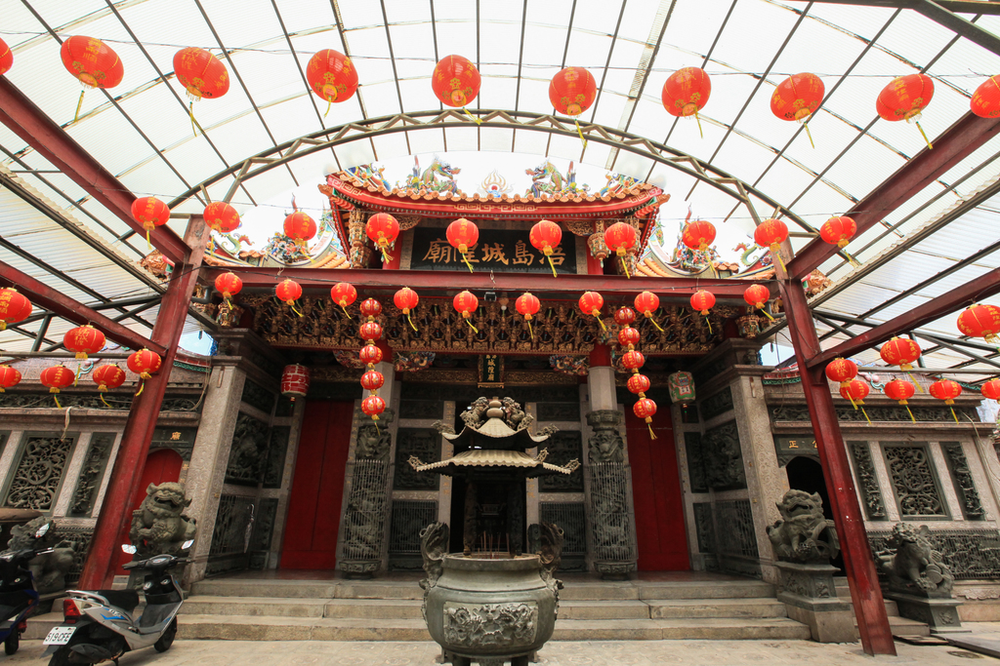
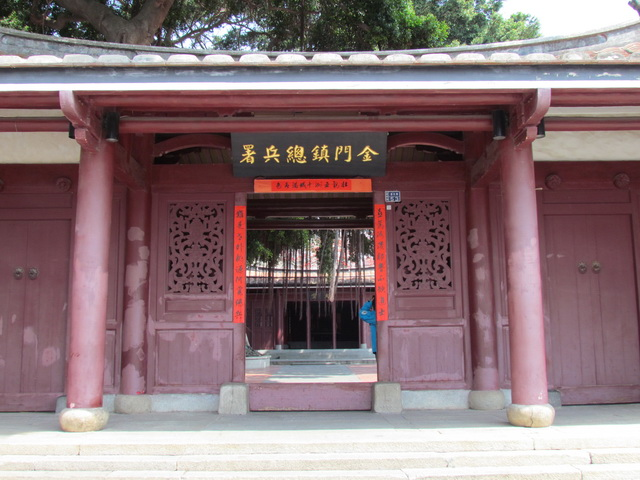
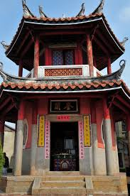
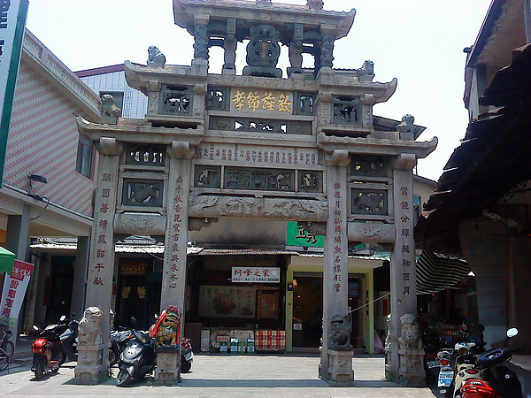
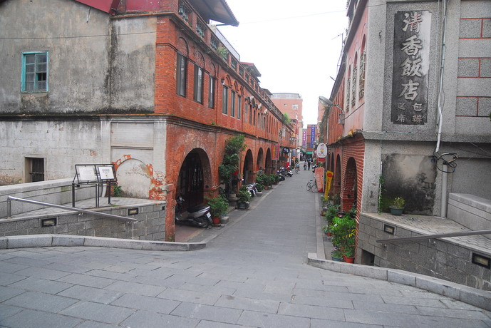
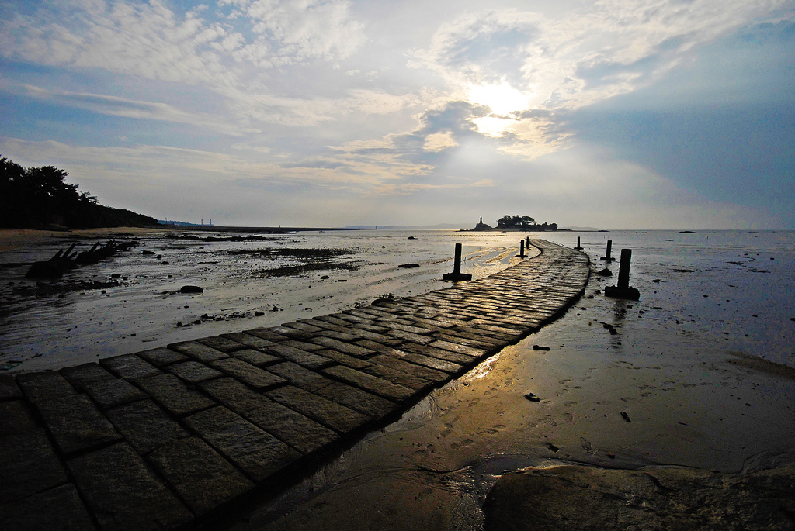

莒光樓

介紹
莒光樓，位在金城鎮西南，下臨莒光湖，背擁豐蓮山餘脈，面浯江溪出海口，外聯建功嶼，佔地兩千餘坪，風景秀麗。 遊客登臨頂樓，近可一覽後浦 (金城市區) 全景、浯江海潮，遠可眺望建功嶼、烈嶼風光及大陸山河。 莒光樓的造型概念，源自於古典建築的做法，但具新意的比例調整與形式轉化，使得整座建築呈現雄渾的氣勢。 莒光樓作為戰地精神的象徵，繼承了南京《首都計劃》的中國固有形式，轉化了傳統城牆城市的角樓建築，讓這棟代表當時金門的大門， 一方面象微「固若金湯，雄鎮海門」的戰地精神。
莒光樓 |
介紹莒光樓，位在金城鎮西南，下臨莒光湖，背擁豐蓮山餘脈，面浯江溪出海口，外聯建功嶼，佔地兩千餘坪，風景秀麗。 遊客登臨頂樓，近可一覽後浦 (金城市區) 全景、浯江海潮，遠可眺望建功嶼、烈嶼風光及大陸山河。 莒光樓的造型概念，源自於古典建築的做法，但具新意的比例調整與形式轉化，使得整座建築呈現雄渾的氣勢。 莒光樓作為戰地精神的象徵，繼承了南京《首都計劃》的中國固有形式，轉化了傳統城牆城市的角樓建築，讓這棟代表當時金門的大門， 一方面象微「固若金湯，雄鎮海門」的戰地精神。 |
城隍廟 |
介紹浯島、浯江、浯洲都是金門的古地名；明朝朱元璋得天下後，曾說：「朕立城隍，使人知畏，人有所畏，則不敢妄為。」 康熙2年（1663）清朝取得金門統治權後，毀城隳屋，當時的城隍廟也被毀壞掉。後埔的浯城隍爺是在康熙21年（1682）， 首任總兵陳龍將金門城總兵署遷移到後埔，也將金門城的城隍爺分火到這裡，已有三百多年歷史，但是期間長達一百四十多年金門卻是無城隍廟可祭祀， 而城隍廟的興建是從嘉慶16年（1811）文應舉開始募款修建，到嘉慶18年（1813）才修建完成。 間經過多次修護，改成花崗石、水泥等建造，增添宏偉氣派，今日之面貌為民國87年重新翻建。 每年農曆四月十二日的「浯島城隍遶境」活動，是金門最大的廟會活動，熱鬧非凡。 |
總兵署 |
介紹「清金門鎮總兵署」原是明萬曆辛丑年(西元1601年)進士許獬讀書的地方，名為「叢青軒」，清康熙十九年 (西元 1680 年) 設金門鎮總兵署， 首任總兵陳龍，考量金門城經歷明末多次兵禍， 原有的千戶所城已不能使用，而后浦人丁旺盛等因素，在康熙廿一年將總兵署從金門城遷到此處， 之後經過多次改建，規模也屢有擴大，後來兩側有部分拆除始成現在規模。民國四年金門設縣，地方民眾俗稱「衙門」的總兵署，為金門最高行政中心， 歷經金門縣公署、金門縣政府、行政公署、金門防衛部、福建省政府、金門戰地政務委員會、自衛總隊部、警察局、臨時縣議會、 行政院處理試辦兩岸通航事務金門行政協調中心等機關進駐辦公。八十五年四月動工規劃整修，使得原貎得以修復。 |
奎星樓 |
介紹奎閣，金門人稱『魁星樓』，又名奎樓或八卦樓，祭拜魁星，魁星是中國五文昌之一，由於金門以前不屬縣， 不可以建孔廟，為了讓金門由子弟參加科舉考試前，有一個祈求考運的地方，後浦鄉賢、曾得過「貢生」功名的林斐章倡建， 獨資捐銀千兩，於清朝道光16年（1836）在後浦塗山頭（現今的陳詩吟洋樓旁）興建一座的樓閣建築，供奉魁星爺；精巧古樸至今已有一百七十多年的歷史， 曾在民國33年及52年兩次重修，但卻不改原貌，列為縣定古蹟。 奎閣是一棟二樓三簷正六角形建築，整體結構採凸顯簡潔明快的木結構技術，映照著這幢文教建築的質樸。 每年考季來臨，都會舉辦一系列的祭拜活動，祈求考生都能心想事成，金榜題名。 |
貞節牌坊 |
介紹邱良功母節孝坊立於清朝嘉慶1 7 年（1812），位於金城莒光路靈濟古寺旁；為當時仁宗皇帝為表揚浙江水師提督邱良功的母親許氏（明印官諱貞淑）堅貞守節28年， 撫育其良功成為國家棟樑，可為鄉梓的楷模。目前是台閩地區規模最大、裝飾最精緻的牌坊，是國定古蹟唯一以牌樓入選，有「台閩第一坊」的美稱。 邱良功的母親許氏，為清朝振威將軍邱志仁之妻；邱良功出生35天，父親邱志仁就與世長辭，當時許氏還不到30歲，含辛茹苦的把剛滿月的邱良功撫養長大， 並入朝為官。嘉慶13年（1808），邱良功任浙江提督平蔡牽亂，有功於國家，清仁宗旌表其母許氏，誥贈邱母一品夫人，並建坊表彰其守節撫孤教子之功。 邱良功母節孝坊是一座四柱三間式之石作牌樓，以高級的泉州花崗白石與墨綠青斗石建造而成，高度超過10公尺。坊頂有「聖旨」石匾，石匾下橫刻「欽旌節孝」四字； 牌坊的龍柱、雲紋等雄偉樸實的雕刻，裝飾種類繁多，包含動物、植物、器物、吉祥圖案，以及象徵邱良功功成名就後返家的精彩情節雕刻，皆是出自內陸名師的巧手。 柱面上有名人題刻聯對，其中一聯為清代台灣人任福建水師提督的王得祿所撰，兩側立著四對石獅，勇猛威武，恆久守護著佇立於金城鎮街巷的牌坊。 |
模範街 |
介紹模範街原是明朝末年，鄭成功於後埔練兵，訓練陸軍的內校場，民國13年由金門商會會長傅錫琪集資興建，含橫街、直街共有四十間店面兼住家，都是用紅磚拱廊建造， 街屋的格局排列非常整齊，連續的單拱拱圈更成優美的線條，極富建築藝術之美，可以作為其他街道的模範，故稱為模範街。 模範街的建築式樣是由南洋引進的「五腳基」型式，街道兩旁都是二進店屋，第一進為洋樓，第二進為閩式建築，外觀整齊、古典雅致，兼具日本大正風格及洋樓的美感。 近幾年，模範街進駐了金門特產商行情調餐廳、個性酒吧等，讓您可以除了欣賞美麗的建築外，也能享受到金門美食及採買金門的特產，夜晚在燈光的照射下， 模範街更是充滿著詩意，展現一種古樸的浪漫風情。 |
建功嶼 |
介紹建功嶼位金城南門浯江溪口，面積約500平方公尺，該島又名董嶼、珠嶼、鰲嶼，是金門本島西海岸與烈嶼(小金門)之衛哨，一嶼堅守， 如砥柱中流，「建功砥柱」因此得名。漲潮時獨成一礁，潮退可經由海上約500公尺的石板道而過，沿路可以看到各種潮間帶溼地生態與各種海鳥。 民國38年，國軍在此建立據點，以嚴控金烈水道。民國49年改名「建功嶼」、民國86年10月20日軍隊撤守，直至民國91年才整建開放，獨特歷史意義。 在建功嶼的南側，現豎立一尊鄭成功的石像，是福建省南安市贈送，南安是鄭成功的故鄉，石像高9公尺(27市尺，取鄭成功27歲進駐金門、廈門兩島之意)，由48塊「泉州白」優質花崗石雕塑，遙望著故鄉南安，代表著對兩岸深厚的感情。 遊客登島參觀，從砲口、制高展望點觀望對岸，實令人易生撫今追昔之嘆。去建功嶼就要看潮水，時間一過，就不無前往，而如果來不及回來，也是會受困在那的。 |